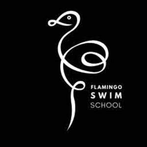

Trade Mark Journal No.2025/027 4 July 2025
UK00004215382 7 June 2025 (9,28,41)

- Class 9
- Downloadable educational materials relating to swimming and water safety; downloadable training courses for swim teachers; mobile applications for booking and delivering swimming lessons; instructional swim videos; digital manuals and e-learning content for swimming education. ; Swimming goggles; Swim goggles; goggles.
- Class 28
- Swimming equipment; aquatic fitness equipment; aquagym apparatus; swimming floats; kickboards; pull buoys; swim fins; flotation devices; swimming training aids. ; Swimming equipment; Swimming kickboards; Toys for use in swimming pools; Swimming floats; Flippers for swimming; Swimming boards; Swimming floats for recreational use; Swimming pools [play articles]; Swimming jackets; Swimming gloves; Swimming rings; Swimming webs; Arm floats for swimming; Swimming belts; Swimming kick boards; Swim floats for recreational use; Swim boards for recreational use; Swimming hand paddles; Fitness exercise machines; Swim fins.
- Class 41
- Provision of swimming lessons; private swimming tuition; operation of swim schools; swimming teacher training services; educational services relating to water safety and swimming; provision of online training courses in swimming and swim instruction; arranging and supplying outsourced swimming instructors; coaching services in swimming and aquafitness; development and delivery of training programs for swimming teachers and coaches; Swimming instruction; Teaching of swimming; Provision of courses of instruction relating to sport; Training of swimming teachers; Provision of courses of instruction; Provision of training; Provision of training and education; Provision of education and training; Rental of swimming pools; Provision of training services for business; Sports tuition, coaching and instruction; Keep-fit instruction; Education and instruction; Physical fitness instruction for adults and children; Instruction courses relating to sporting activities; Education services relating to water safety; Educational and training services; Accreditation of educational services; Sports education services; Physical education services; Training and education services; Educational and training services relating to sport; Provision of tuition; Aerobics training services; Rental of sports equipment and facilities; Physical fitness training services; Personnel training; Personal trainer services [fitness training]; Training of sports teachers; Coaching [training]; School services; Teaching at elementary schools; Pre-school education; Swimming facilities; Pre-school teaching; Tuition in sports.
Flamingo Swim School Ltd